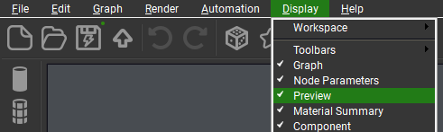
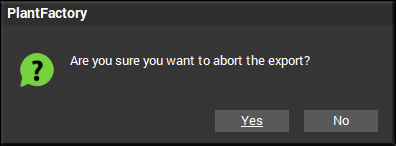
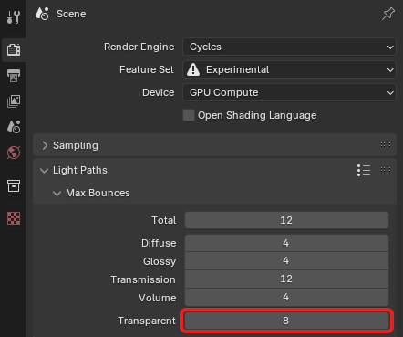
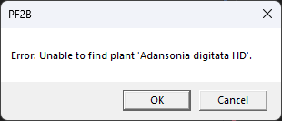
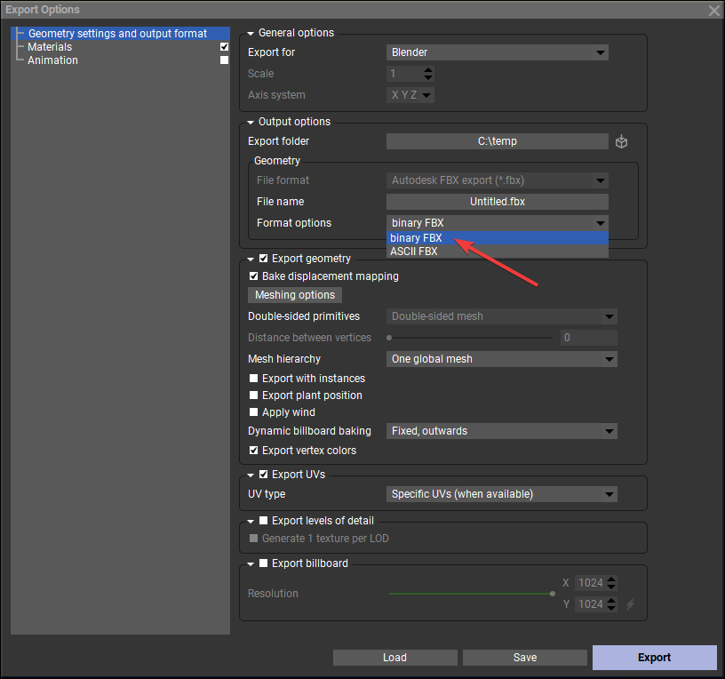
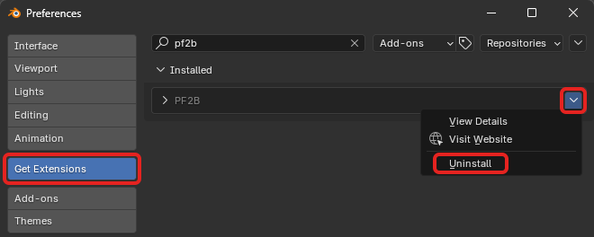

Frequently Asked Questions¶
What is PlantFactory?¶
- PlantFactory is a powerful 3D vegetation modeling software originally developed by e-on software (now part of Bentley Systems). It allows users to create highly detailed, procedural plant models using an intuitive node-based workflow. The software also includes a vast library of pre-made plants, offering a wide range of species with adjustable parameters for easy customization. Read more about it here.
Can I use the plants commercially?¶
-
Yes, you can use the plants commercially, including in games, client work, and project files. However, while you can modify and resell assets created from scratch in PlantFactory, you cannot resell models derived from PlantCatalog content. For the exact terms and the most up-to-date details, please check the official PlantFactory FAQ.
All plants exported with PF2B use custom shaders, which you are free to use in your projects, but you may not sell the shaders themselves.
What operating systems does PF2B support?¶
- PF2B is only supported on Windows. It requires the Windows version of PlantFactory and is not compatible with macOS or Linux.
Which versions of PlantFactory are supported?¶
- PF2B only supports PlantFactory 2024. Older versions are not compatible with the add-on.
What is the PF2B cache?¶
-
The PF2B cache consists of thumbnails and JSON files that store information about the plants and presets, such as plant height, polygon count, and other details. It is used to display the plants and presets inside the gallery, allowing you to browse them easily within the addon.
The cache that is shipped with PF2B includes a total of 23,678 thumbnails (491 plant thumbnails and 23,187 preset thumbnails) and is approximately 309 MB in size. It covers all plants and presets from both the PlantCatalog and PlantFactory libraries.
For more details on setting up the cache, see the First Time Use & Importing Cache section. Additional configuration options can be found in the Preferences page.
What does the number in parentheses mean in preset names?¶
- It indicates the plant's maturity, representing its current age as a percentage of its maximum potential age. A value of 0 means the plant is very young, while 100 means it has reached full maturity.
What Normal Map format does PlantFactory use?¶
- PlantFactory uses the OpenGL normal map format, which is the same as the one used in Blender, so no conversion is required.
I receive a PIL / Pillow error when trying to install the addon¶
-
This issue happens when Blender has previously built a conflicting version of the PIL/Pillow library inside its temporary Python environment. Removing these cached files forces Blender to rebuild them correctly.
Steps to fix:
- Uninstall the PF2B add-on (if it appears in Blender's installed addons list). If not, continue.
- Close all Blender windows.
-
Open the folder below by pasting it into Windows Explorer.
Remember to replace5.0with your actual Blender version. -
Delete the folders named PIL and Pillow, including any duplicates.
The.localfolder is a temporary Blender folder, and it is safe to remove everything inside it. Blender will rebuild it automatically. - Restart Blender and install the addon again.
PlantFactory starts, but nothing happens, and no plant is imported into Blender¶
- 
-
Check that the "Preview" window under "Display" in PlantFactory is enabled, as shown in the screenshot here:
I receive a "Are you sure you want to abort the export" popup during import¶
- 
- This is usually caused by PlantFactory not having enough time to load the geometry of the plant before the export is attempted. Try adjusting the Geometry Load Buffer under preferences to resolve this issue. As an alternative workaround, in cases where this persists, hold down the "Escape" key for 2-3 seconds to make the popup disappear.
My plant appears too dark and some textures show black backgrounds¶
-
This issue is often caused by the
Transparency Bouncessetting in Blender being set too low. Increasing its value should help ensure proper light distribution and eliminate the dark areas.Example
- Navigate to the Render Properties tab.
- Scroll down to the Light Paths section.
- Locate the Transparency Bounces setting.
- Increase the value for Transparency Bounces.
- Re-render your scene to see if the issue is resolved.


{kind=link}
What is the difference between a Backlight texture and a Translucency texture?¶
- There is no difference, both refer to the same type of texture used to simulate light passing through thin surfaces like leaves.
I want to create my own plants. What should I keep in mind?¶
-
To ensure materials are set up correctly when importing them with PF2B, name your materials properly inside PlantFactory. Specifically, include a keyword that indicates the type of material they represent. Recognized keywords include
leaf,bark,flower,fruit, and other relevant terms. This allows the addon to correctly identify and process materials during import.For more details, check the 'Automated Setup' section in PF2B: Under the Hood.
Tip
Check out the Community section for guides and resources on getting started with creating your own plants.
My plant Materials looks off. What can I do?¶
The translucency looks off¶
-
This might be caused by a low-quality translucency map that is not normalized and is either too bright or too dark, causing too much or too little translucency for the plant. If this is the case, you can:
- If you want to disable the translucency texture altogether, you can do this easily via the Post Processing panel by selecting the plant, editing the leaf material, and disabling it there.
- Manually go into the material and adjust the texture by, for example, adding a
Color Rampor aMap Rangenode between the texture and the shader and adjusting the brightness until the translucency looks correct.
If you believe the translucency texture setup is incorrect, please get in touch with me and provide the plant details, and I'll investigate further.
Tip
You can also disable the translucency texture import by unchecking the
Import Translucency Mapoption under the import settings to use a static translucency value instead.
The normals look off¶

-
Try clearing Custom Split Normals to see if this helps. This can be done easily by selecting the plant and navigating to
Properties Panel > Data > Geometry Data > Clear Custom Split Normals Data, as shown in the image:If the issue persists, please get in touch with me and provide the plant details, and I'll investigate further.
Other Textures Look off / Missing Textures / Wrong Textures¶
-
This might be caused by inconsistent texture names, as mentioned under PF2B: Under the Hood. Please try to troubleshoot the issue using the Troubleshoot Guide: Missing or Incorrect Textures first to pinpoint the problem.
If there are textures that are not connected or are incorrectly connected for a specific plant, please get in touch with me and provide the plant details, such as the name of the plant and the preset used, and I'll investigate further.
Plant Geometry looks incorrect. What can I do?¶
- Please get in touch with me and provide the plant details, and I'll investigate further.
There are missing plants / empty thumbnails shown when browsing plants¶
- Please run both the
Re-Index PlantsandReload Thumbnailstools found in Preferences > Misc.
My custom plants are not showing up when enabling the 'Personal Library'.¶
- This is most likely caused by the plants not being cached. Please generate the cache by following the instructions under Library Cache in Preferences.
Why does my my plants show 'No Presets'?¶
-
This issue is likely caused by a missing or incomplete Preset cache.
- If this occurs with plants from the PlantCatalog & PlantFactory libraries, you can download and install the cache as described here.
- If this affects other plants, you can regenerate the cache using the tools available in Preferences > Plant Library.
Note: Not all plants in the PlantFactory library have presets available.
I receive Unable to find plant error when trying to import¶
- 
-
This error means PlantFactory is unable to locate the specific
.tpffile for the plant. If the missing plants are from the PlantCatalog library, please verify that you have installed all PlantCatalog files as described in the Getting Started > Installation.If you have not installed the full PlantCatalog library and do not wish to do so (as it is optional), you can run the Re-Index Plants tool to ensure only available plants are shown in your library.
I receive 'Failed to import: ': Error: ASCII FBX files are not supported' error when trying to import¶
-
This error is caused by using the wrong FBX format setting in PlantFactory. Unfortunately, the addon cannot control this automatically, so you’ll need to set it manually. Luckily, it’s a quick fix:
- Start PlantFactory.
-
Go to File > Export > Export As Mesh.
-
Under the Output Options section:
- Make sure File format is set to
FBX.- If you don’t see the
FBXoption, change Export for toBlender. This should enable the correct format.
- If you don’t see the
- Then, under Format options, change FBX format to
Binary FBX. 
- Make sure File format is set to
-
Click Export (bottom-right). You’re just exporting an empty scene here, this step saves the FBX setting.
- Close PlantFactory and try importing again via PF2B.
{kind=link}
Do I have to install the entire PlantCatalog library?¶
- No, installing the full PlantCatalog library is not required. If you only plan to use the Browse via PlantFactory mode, you can skip the installation entirely. However, if you plan to use the Browse via Blender mode, you can install only the parts of the library you need. See How can I hide PlantCatalog plants if I don’t want to install the full library? for more details.
How can I hide PlantCatalog plants if I don’t want to install the full library?¶
- If you have not installed the full PlantCatalog library and do not wish to do so (as it is optional), you can run the Re-Index Plants tool to ensure only available plants are shown in your library.
Does PF2B work with Geo-Scatter?¶
- Yes, PF2B is fully compatible with Geo-Scatter right out of the box. All plants work seamlessly, and there are also ready-made biomes available for easy setup. Learn more on the Biomes page.
How do I update to a new version?¶
-
To update to the latest version, follow these steps:
- Download the latest version:
- Remove the old version:

- Open Blender, go to
Edit > Preferences > Get Extensions. - Search for "PF2B".
- Locate the arrow ( icon) in the top right corner.
- Click on
Uninstall.
- Open Blender, go to
- Restart Blender to clear any cached data.
- Install the new version:
- Follow the default installation instructions.
{kind=link}